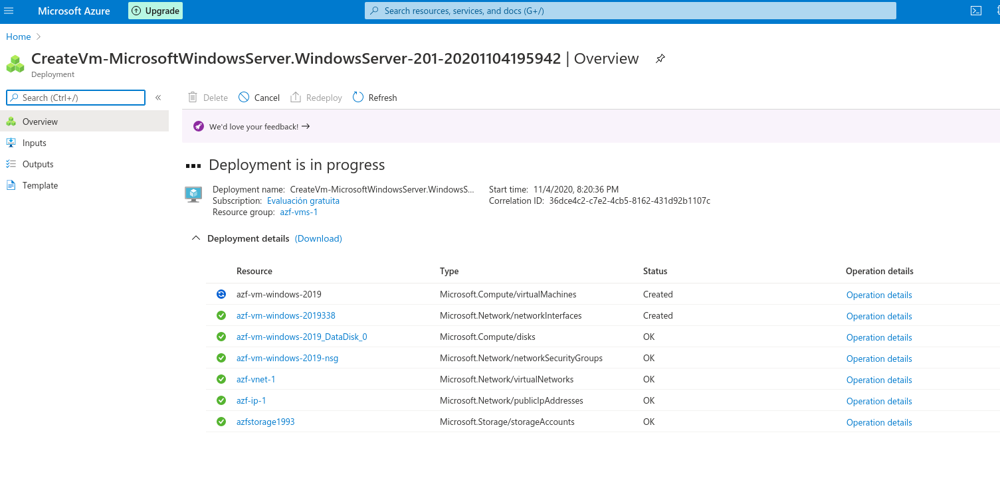
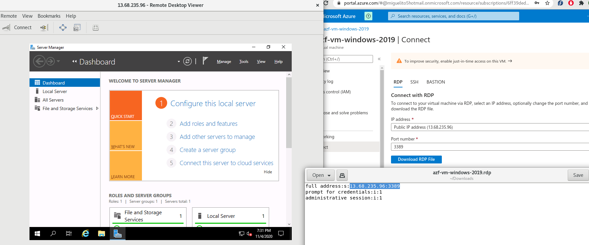

AZURE
QUE ES
-
Microsoft Azure es un servicio de Informática en la Nube creado por Microsoft para construir, testear, desplegar y gestionar aplicaciones y servicios a través de centros de datos gestionados por Microsoft.
-
Microsoft Azure, como otros proveedores de nube, nos permite alquilar recursos como espacio de almacenamiento o ciclos de CPU en equipos físicos que no debo administrar. Solo se paga por lo que usa (o al menos se mide).
-
Los servicios informáticos ofrecidos suelen variar en función de cada proveedor. Normalmente estos servicios incluyen:
- Potencia de proceso: por ejemplo, aplicaciones web o servidores Linux.
- Almacenamiento: por ejemplo, archivos y bases de datos.
- Redes: por ejemplo, conexiones seguras entre el proveedor de nube y la empresa.
Potencia de proceso
- Cuando hacemos virtualmente cualquier acción en internet, como pagar una factura online, leer un periódico y enviar un correo electrónico, estamos interactuando con servidores de nube que procesan cada solicitud y devuelven una respuesta. Todo esto requiere de cómputo.
- Maquina virtual
- Contenedores
- Serverless o informatica sin servidor
Almacenamiento
-
La mayoría de las aplicaciones leen y escriben datos. Y en este sentido, el tipo de datos y cómo se almacenan puede ser diferente según el tipo de aplicación, la necesidad y velocidad requerida.
-
Los proveedores de nube suelen ofrecer soluciones de almacenamiento para máquinas virtuales, aplicaciones web, bases de datos, archivos de datos y analítica. Por ejemplo, si quiere almacenar texto o un clip de película, podría usar un archivo en disco. Si tuviera un conjunto de relaciones (por ejemplo, una libreta de direcciones), podría decidirse por un enfoque más estructurado, como usar una base de datos.
-
La ventaja de utilizar almacenamiento basado en nube, es que no debemos preocuparnos por el escalado. Si se necesita más espacio, se puede agregar pagando un poco más de precio, e inclusive si las necesidades de almacenamiento bajan, también bajará el precio asociado.
Redes
En todos estos casos, las redes cobran una importancia vital. Los proveedores de nube suelen tener servicios de redes que nos permiten:
+ Crear y configurar Redes Virtuales.
+ Crear y conectar de extremo a extremo redes en la nube con una infraestructura local (conocidas como site-to-site, y point-to-site).
+ Parametrizar reglas de acceso a recursos.
+ Monitorear tráfico de redes.
+ Aplicar reglas, restricciones y protecciones a las comunicaciones.
CREAR CUENTA
-
- A través de azure.com: es la forma más rápida y fácil que tienen las organizaciones de todos los tamaños para empezar a usar Azure. Puede administrar las implementaciones y el uso de Azure, como así también obtener una factura mensual de Microsoft por los servicios usados.
- Con la ayuda de un Partner de Microsoft. Es un modelo para obtener facturación local en tu país. De esta manera, Azure se brindará como servicio administrado a través de un partner, quién te proporcionará el acceso y la facturación, junto con un soporte técnico básico.
- A través de un representante directo de Microsoft, opción pensada para organizaciones de gran tamaño o clientes que ya trabajan con la marca. A diferencia de azure.com (que requiere tarjeta de crédito), esto habilitará un tipo de contrato especial con varias ventajas al momento de necesitar varias suscripciones.
-
Los servicios de Azure están disponibles a través de Centros de Datos gestionados por Microsoft. Los mismos están conformados por edificios.
-
xisten +60 regiones anunciadas en todo el mundo, y muchas que están anunciadas como adicionales futuras. Esto representa una presencia física en 140 países. En el mapa podrás ver la ubicación de los centros de datos, a excepción de 3 correspondientes a gobierno por lo cual su ubicación es secreta.
-
SLA significa en inglés “service level agreement”, y en español “acuerdo de nivel de servicio”. Es un acuerdo escrito entre un proveedor de servicio y su cliente con objeto de fijar el nivel acordado para la calidad de dicho servicio. Este nivel puede ser un porcentaje que representa la disponibilidad mínima
PRINCIPIO 5-3-2
-
La informática en la nube es un metodo de gestion de recursos de IT donde los usuarios acceden a los recursos virtuales de computo, red y almacenamiento que estan disponibles online. Estos recursos se pueden aprovionar de manera instantanea y elastica.
-
Se compone de:
- 5 Caracteristicas
- 3 metodos de entrega
- 2 modelos de implementacion
Caracteristicas
- Autoservicio y bajo demanda: un consumidor puede provisionarse de caracteristicas como tiempo de uso, almacenamiento, memoria...
- Acceso amplio y ubicuo: los recursos pueden ser accecidos desde cualquier lugar y cualquier dispositivo.
- Ubicacion transparente y agrupacion de recursos: suelen estar en diferentes localizaciones sobre distintos recursos fisicos o virtuales que son dinamicamente asignados.
- Elasticidad rapida (estirarse y contraerse): pueden aumentar en epocas de mucha carga asi como reducirlo cuando no se use.
- Servicio medido (e incluso pago por uso): recursos y capacidades segun lo que necesitas.
Metodos de entrega
- IaaS(Infraestructura como Servicio):
- Cliente tiene capacidad de utilizar almacenamiento, red, recursos sofware, SO, app.
- No tiene el control sobre la infraestructura pero sino tiene el control del resto apartir del SO.
- COntrol limitado sobre red como el firewall
- Ejemplo serian las maquinas virtuales
- PaaS(Plataforma como Servicio):
- Podemos desplegar apps propias o de terceros
- Control sobre las apps y la configuracion de ellas
- Ejemplo seria servicios hosting
- Saas(Software como Servicio):
- Capacidad de usar aplicaciones en una infraestructura de nube que cumple con las 5 caracteristicas
- No tenemos control sobre ningun componente, solo lo usamos.
- Ejemplo seria Office 365, exchange, gmail, yahoo, google apps.
Modelos de implementación
- Nube Privada: en mi propio centro de datos
- Nube Pública: en azure o otros proveedores de servicios
- Puede haber la mezcla con Nube Hibrida.
MAQUINAS VIRTUALES
- Tipo de recurso escalable por Azure
- Se tiene control total sobre la configuración y se puede instalar de todo
- No es necesario comprar hardware fisico para escalar o ampliar
- Azure tiene servicios para supervisar, proteger y administrar las actualizaciones y revisiones del sistema operativo
- Soy responsable de:
- Mantener el SO y sus actualizaciones
- Trabar sobre la performance
- Monitorear el espacio de disco usado
- Componentes:
- Disco virtual: el disco es el que tendrá, por ejemplo, el sistema operativo instalado. Gracias al disco virtual puedo iniciar el equipo y guardar información en forma persistente
- Placa de red virtual: al igual que en un equipo físico, es la que me facilitará la conexión con una o más redes.
- Direcciones IP: gracias a la cual podré conectarme al equipo virtual. Estas direcciones IP pueden ser privadas y públicas.
- Grupos de seguridad de red: que nos ayudarán a definir desde qué origenes me puedo conectar, y hacia qué destinos puedo acceder, teniendo en cuenta protocolos, puertos, etc. Los Network Security Groups son una manera ágil de gestionar los permisos de red, para una o más máquinas.
- Configurar: puedo el nombre de la MV, el SO y el tamaño. Tiene al menos dos discos, uno para el SO y otro temporal para la memoria virtual.
- Spot Virtual: herramienta que lo que no se use se vaya ahi para ahorrar.
CREAR MV
Assignment Tasks
A
Ingresar al Portal de Azure. Crear un "Grupo de Recursos" [Resource Group] con el nombre "azf-vms-1"
Completed on 4 noviembre, 2020 7:01 pm
B
Dentro del Resource Group, seleccionar la opción "Crear recurso" [Create resources]. Seleccionar el grupo "Cómputo" [Compute] y de la lista "Máquina Virtual" [Virtual Machine].
Completed on 4 noviembre, 2020 7:01 pm
C
En el asistente de creación, validar que la suscripción seleccionada sea la correcta (probablemente sea "FREE TRIAL") y el Resource Group seleccionado es el correcto: "azf-vms-1".
Completed on 4 noviembre, 2020 7:01 pm
D
Ingresar un nombre para la máquina virtual, por ejemplo "azf-vm-windows-2019".
Completed on 4 noviembre, 2020 7:01 pm
E
Seleccionar una región de Azure. Por ejemplo "Este de Estados Unidos" [East US], una imagen "WIndows Server 2019 Datacenter" y un tamaño de máquina virtual (explorar todas las imágenes y elegir un tamaño como "B1ms" (es un equipo barato para este ejercicio).
Completed on 4 noviembre, 2020 7:01 pm
F
Ingresar un usuario [Username] y una contraseña dos veces [Password]. ¡No olvidarlas!
Completed on 4 noviembre, 2020 7:01 pm
G
Seleccionar el puerto de entrada [Inbound port] "RDP (3389)" para poder ingresar luego al equipo.
Completed on 4 noviembre, 2020 7:02 pm
H
Ir al paso siguiente: "Discos" [Disks]. Ingresar un Disco de Datos adicional [Create new disk] del menor tamaño posible.
Completed on 4 noviembre, 2020 7:06 pm
I
Ir al siguiente paso "Redes" [Networking]. Crear una nueva red con el nombre "azf-vnet-1" con el espacio de direcciones "10.0.0.0/16" y crear una subnet con el nombre "Sub1" y el espacio de direcciones "10.0.0.0/24". Validar que una vez creada la red, esté seleccionada en "Virtual Network" y "Subnet" en el asistente del equipo virtual.
Completed on 4 noviembre, 2020 7:11 pm
J
Crear una IP pública con el nombre "azf-ip-1", el "SKU Basic" y asignación "Static".
Completed on 4 noviembre, 2020 7:11 pm
K
Seleccionar el grupo de seguridad de red [NIC network security group] en "Basic".
Completed on 4 noviembre, 2020 7:11 pm
L
Validar que los puertos habilitados son solo "RDP (3389)".
Completed on 4 noviembre, 2020 7:11 pm
M
Ir al siguiente paso "Administración" [Management].
Completed on 4 noviembre, 2020 7:13 pm
N
Seleccionar en diagnóstico de booteo [Boot diagnostics] en "On". Esto requerirá crear una cuenta de almacenamiento.
Completed on 4 noviembre, 2020 7:16 pm
O
En el campo "Cuenta de Almacenamiento de Diagnóstico" [Diagnostics storage account] crear una nueva cuenta de almacenamiento con el nombre "azfstorageXXXX" donde XXXX es un número aleatorio generado por ti (dado que los nombres de cuentas de almacenamiento deben ser únicos en todo Azure). El tipo de cuenta debe ser "Storage (general purpose v1) y "Locally-redundant storage (LRS).
Completed on 4 noviembre, 2020 7:17 pm
P
Habilitar el apagado automático [Auto-shutdown] y elegir un horario de apagado para tu zona geográfica.
Completed on 4 noviembre, 2020 7:17 pm
Q
No modificar el resto de las opciones e ir al siguiente paso "Avanzado" [Advanced].
Completed on 4 noviembre, 2020 7:18 pm
R
No modificar ninguna opción e ir al siguiente paso "Etiquetas" [Tags].
Completed on 4 noviembre, 2020 7:18 pm
S
Ir al último paso "Revisión y Creación" [Review + create]. Cuando pase todas las validaciones, revisar el resumen de opciones seleccionadas que coincidan con lo solicitado y crear la máquina.
Completed on 4 noviembre, 2020 7:19 pm
T
Cuando finalice la creación, ir al equipo virtual y seleccionar "Conectar" [Connect] y elegir "RDP". Se descargará un archivo, y desde el cliente de Escritorio Remoto de tu computadora conectarse.
U
Ingresar el nombre de usuario y contraseña que ingresamos en pasos anteriores, y comprobar que nos podemos conectar al equipo.
V
Ir al Grupo de Recursos [Resource Group] que hemos creado y comprobar que todos los recursos (máquina virtual, discos, placas de red) están creados.



HERRAMIENTAS AZURE
- Azure Portal para interactuar con Azure a través de una interfaz gráfica de usuario (GUI).
- Azure PowerShell y la interfaz de la línea de comandos de Azure (CLI) para las interacciones con Azure de línea de comandos y basadas en automatización.
- Azure Cloud Shell para una interfaz de línea de comandos basada en web.
- Azure Mobile App para supervisar y administrar los recursos desde el dispositivo móvil.
AZURE POWERSHELL
- Instamos la herramienta AzurePowershell, apartir de la versión 7 es multiplataforma.